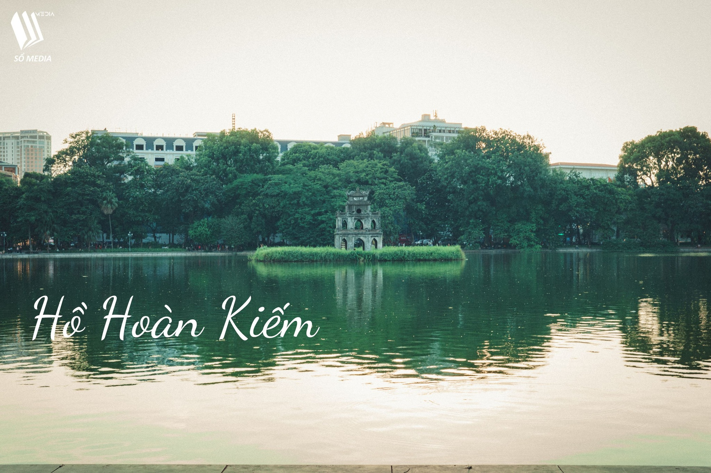

1. Hồ Hoàn Kiếm
Hồ Hoàn Kiếm là biểu tượng của Hà Nội, nơi bạn có thể chụp những bức ảnh tuyệt đẹp với tháp Rùa và cầu Thê Húc. Thời điểm tốt nhất để chụp ảnh là vào sáng sớm hoặc chiều muộn khi ánh sáng mềm mại và ấm áp.
Hà Nội không chỉ nổi tiếng với những di tích lịch sử mà còn là nơi lý tưởng để chụp những bức ảnh đẹp. Dưới đây là 5 địa điểm chụp hình tại Hà Nội mà bạn không nên bỏ lỡ!
Hồ Hoàn Kiếm là biểu tượng của Hà Nội, nơi bạn có thể chụp những bức ảnh tuyệt đẹp với tháp Rùa và cầu Thê Húc. Thời điểm tốt nhất để chụp ảnh là vào sáng sớm hoặc chiều muộn khi ánh sáng mềm mại và ấm áp.
Hồ Tây là địa điểm lý tưởng để chụp ảnh hoàng hôn. Với không gian rộng lớn và cảnh quan đẹp, bạn sẽ có những bức ảnh lãng mạn và ấn tượng.
Nhà thờ lớn Hà Nội với kiến trúc cổ kính là nơi lý tưởng để chụp những bức ảnh nghệ thuật. Hãy chú ý đến ánh sáng và góc chụp để có những bức ảnh đẹp nhất.
Nhà Mậu là một địa điểm chụp ảnh mới nổi tại Hà Nội. Với không gian xanh mát và kiến trúc độc đáo, bạn sẽ có những bức ảnh đẹp và lạ mắt.
Four Seasons coffee không chỉ là nơi thưởng thức cà phê mà còn là địa điểm chụp ảnh lý tưởng với không gian sang trọng và hiện đại.
Hy vọng với những gợi ý trên, bạn sẽ có những bức ảnh đẹp và ấn tượng tại Hà Nội. Chúc bạn có những trải nghiệm chụp ảnh thú vị và đầy cảm hứng!